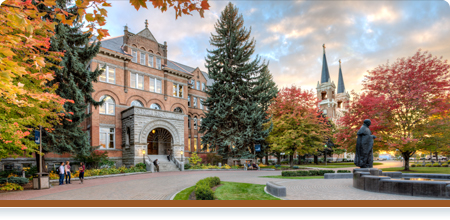
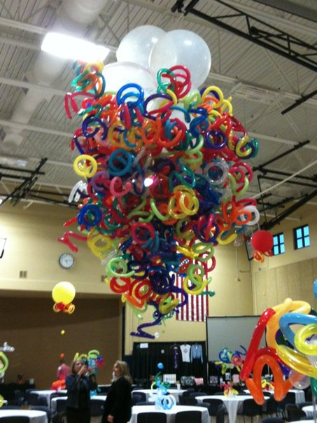

The College Years
When I started college, my father told me I should major in Computer Science. But I had already decided to be a teacher. I double majored in Music Education and Mathematics. After completing my student teaching, it became clear to me that teaching was not for me. There was many reasons why, but having gone through all that work I knew that students deserved a better teacher than I could be. I guess I should have known that father knows best.
The Dark Days
Soon after graduation, I got married and moved to Kansas so that my husband could get his PHd at KU. Having decided not to be a teacher I needed a new job to fill my time. I applied a few places and finally got a job at the PictureMe Portrait Studio in Walmart. It was the worst job I've ever had. No exaggerations. If I wasn't attempting to take marginally good pictures of crying children, I had to cold call people about having more pictures of their crying children taken. The company focused more on upselling over priced prints than providing a quality product. It was a stressful time, but it motivated me to do something different.
The Cliche
After the portrait studio I worked a short stint at a local balloon shop. But the hours weren't
very consistent.

I needed a different job while I figured out what to do next. I landed a
position at the Starbucks in downtown Lawrence. It was a bit tough resigning myself to being the
cliche of a college graduate working at Starbucks, but it wasn't a bad job. I got promoted to
supervisor a few months after I started. I enjoyed my co-workers and the friendships I made with
regular customers.
A Change of Pace
After a lot of deliberation I decided to take my dad's advice and look into computer science.
I've always been a fan of technology and math and coding logic are very closely related. I
signed up for some classes at JCCC.
 I took to the coding classes quite easily. I finally
felt like I had found something I could enjoy doing for a living. The only problem was the
classes were moving slowly and it was expensive. After some talks with friends of mine in the
industry, I decided that learning on my own might move me faster towards my goal. I got a new
job working at the KMart Distribution Center so that I could have more time to dedicate to learning.
The work was hard, but I had more time during the week and in the evenings to do independent learning.
I learned a bit of Ruby, Ruby On Rails, Java, and JavaScript.
I took to the coding classes quite easily. I finally
felt like I had found something I could enjoy doing for a living. The only problem was the
classes were moving slowly and it was expensive. After some talks with friends of mine in the
industry, I decided that learning on my own might move me faster towards my goal. I got a new
job working at the KMart Distribution Center so that I could have more time to dedicate to learning.
The work was hard, but I had more time during the week and in the evenings to do independent learning.
I learned a bit of Ruby, Ruby On Rails, Java, and JavaScript.
Moving Forward
A few months after starting work at the distribution center I was approached about an opening for
a system administration supervisor. The higher ups had gotten wind that I was technically inclined.
I took the job even though it was a third shift job. I taught myself Access, VBA, and SQL on the job.
I quickly started buidling tools for the building to use. A year later, I was promoted to manager.